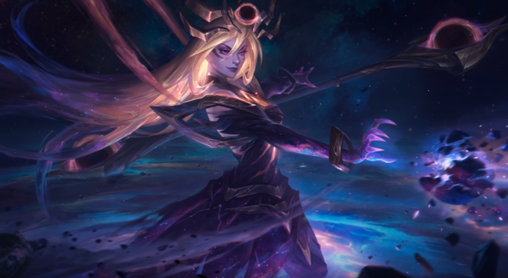

- 애니
- 럭스
- 직스
- 맨날 마우스탓하는 최진만씨
- 챔프 다양성에대한 중요성
- 근거리 챔프에대한 중요성
잘하는법에대해 알아보자.
1. 선픽싸움
챔프의 한정적인 폭은 카운터픽을 맞기쉬움.
이미 확률상 지고 들어갈수있음.
그래서 챔프를 다양하게 해봐야댐
2.게임센스
이건 타고 나야되는건데... 파오캐 하던거 보면 어느정도 센스는있다고생각함.
하지만 다른사람의 영상보면서 니가 생각도 못한 센스플레이도 할
줄알아댐.
3.멘탈
이글의 저자도 사실 실력은 다이아인데 플레밖에못간이유가 멘탈적인부분임.
롤을하다보면 ㅇㅁ 없는애들 ㅈㄴ많아서 멘탈 개흔들림.
서폿터는 그런 팀원들의 멘탈을 챙겨가며 팀을이끌어야댐.
서폿=리더. 공식임.
